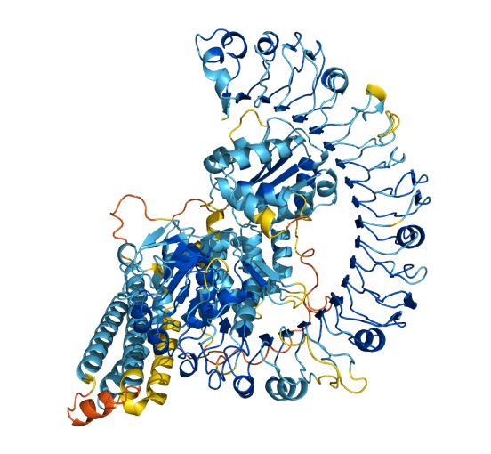

applications of computing that makes positive contributions to society
AlphaFold is an AI system developed by Google DeepMind that predicts a protein’s 3D structure from its amino acid sequence. It regularly achieves accuracy competitive with experiment.

Sir Demis Hassabis (born 27 July 1976) is a British artificial intelligence (AI) researcher, and entrepreneur. He is the chief executive officer and co-founder of Google DeepMind, one of the world's leading AI research organisations, and Isomorphic Labs, and a UK Government AI Adviser.